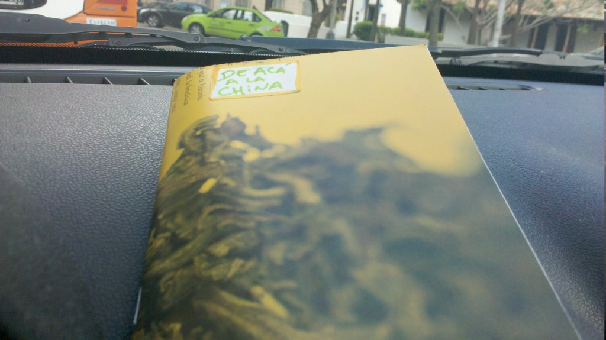
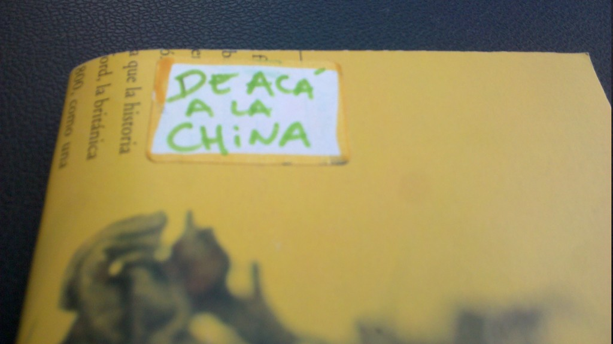

De acá a la China y la autoproducción de libritos
De la última FLIA, en Santa Fe, me traje un librito llamado De acá a la China, de Ale Raymond. Lo dejé en el auto y cuando tenía que esperar, aprovechaba para leerlo. Me gustó mucho el cuento De este lado del mundo.
Pero más allá del contenido, lo que me llamó la atención fue la edición. La tapa está hecha con tapa de revista o similar, donde predomina el amarillo y donde el texto habla casualmente (o no) de la ruta del té y (tal vez) de China.
{kind=link}
En su interior se lee
Este cuadernillo está compaginado a mano (por si no se nota). Ojalá les guste.
Estoy en campaña de armar un librito con este estilo pero automatizando lo más que pueda. Voy a hacer la edición con Latex (usando una plantilla más o menos linda tengo un diseño aceptable con cero esfuerzo, chau Indising). Voy a usar unos scripts en Python para realizar el compaginado (el librito va a ser A6 pero voy a imprimir en A4 para ahorrar papel, en cada hoja imprimiré 8 páginas). Las tapas van a ser de revista reciclada o similar.
{kind=link}
Pronto en este blog los detalles exactas de mi autoproducción y las instrucciones para replicarlo.
Comentarios
Comments powered by Disqus